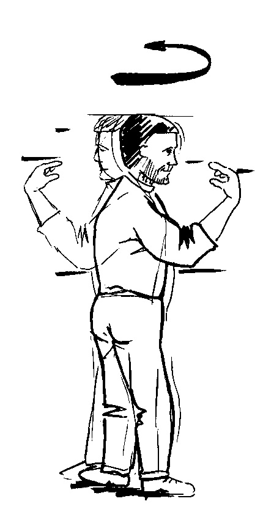
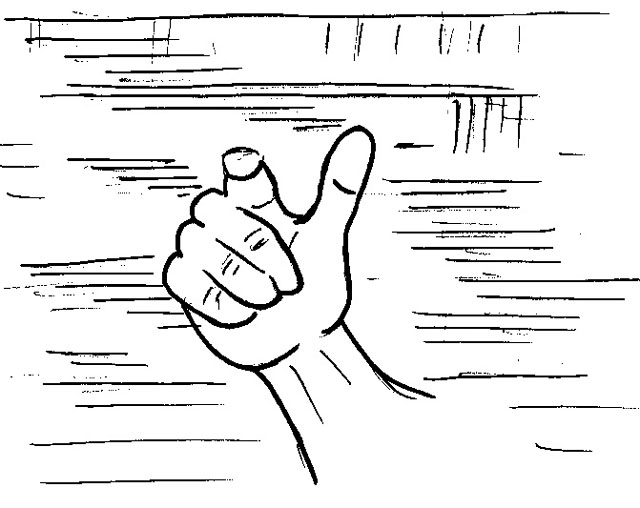

We are difficult to please. Rushing about in our daily lives, we yearn to be still. But as soon as we are still, we get bored and want to be on the move. Yet we can have the best of both worlds – we can be still and moving at the same time.
If I stand up and turn round on the spot, you see me turning whilst the world stays still.
But from my point of view I remain still whilst the world turns.
Try it. Stand up, point at your no-face and carefully turn round. What moves? Beyond your finger the room moves past. Is there any movement on your side of your finger? Don’t you remain still?
Go for a walk and notice that you remain still whilst the scenery flows through you. When you’re driving, observe that you go nowhere whilst your destination comes to you. It's the only way to travel!
Our seemingly irreconcilable needs for movement and rest are reconciled.